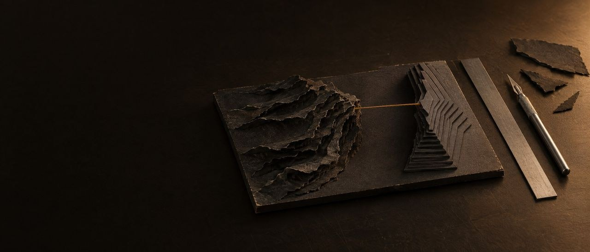
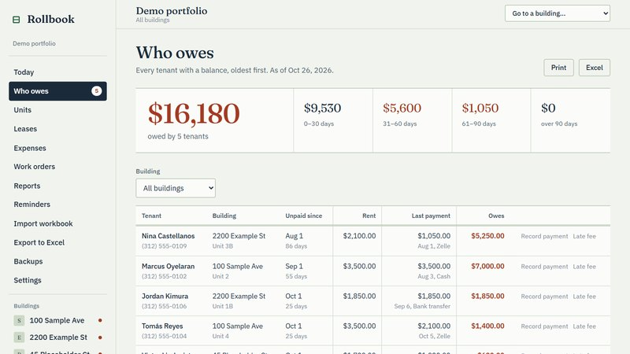

The call: a first conversation about which door fits you.

Index · 11 tools · 01 place keptBuilt by us.
01
The factory
NGAI Factory · writes training documents
A model builder that feels like a game. The factory is a model builder. It turns designing how a company works with AI agents into something like a game: you lay out the floor, add stations, give each one a worker and a model, and draw the belts between them. You see the whole company, working, as a picture. Someone who has never used AI can do it with clicks, and enjoy it. Our own line writes training documents this way: one agent drafts, a second checks, a person reviews, a final audit runs, and nothing goes out without a person's yes. You can also sketch your own process on the floor with us, and we turn it into a working line. The film shows it running.
Play · 0:36The factory's own test job riding the full line: Forge, Mason, Sentinel, the Outside Hold, the Final Bay. Demo job; nothing spent.
(If you spot the cat chasing the mouse, it's real. We add small details just for fun.)
Text version
The factory's own test job riding the full line: Forge, Mason, Sentinel, the Outside Hold, the Final Bay. Demo job; nothing spent.
02
Fred
A daily brief and tracker
The personal assistant that replaces the apps you stopped using. If you keep a to-do list, an expense tracker or a reminders app, Fred replaces all of them with a voice note or a tap on yes or no. Tell him what happened, out loud. He keeps the list, the deadlines, the papers and the money number, and sends one short brief every morning. Nothing about your money changes without your yes. Fred can do much more: for example, he can control software on a computer remotely. For companies that want that level, we build custom packages.
03
Nicky
A social-media assistant
The owner sends photos in a chat. Nicky crops them, writes three caption options and suggests a time to post. Why you'd want it: you take the photos; Nicky does the writing and the timing. Nothing is posted until you tap approve.
04
AI guy
An AI worker
Why you'd want it: an AI that works for you needs a sandbox. AI guy lives in its own sealed-off computer, away from yours, with its own key and its own chat line, so it has no way into your own computer or your files, only into what you give it. It starts switched off and has a stop switch. That is how you let an AI do a side job for you and still sleep at night.
05
The Painting
A map of what the AI can do
An interactive map of every feature, tool and setting in the Claude apps: what each one is, how to turn it on, whether we have it, and where the fact came from, with the date it was checked. Why you'd want it: nobody has time to learn every setting. This shows what is possible, in plain words, and how to turn it on.
06
Blueprint
A course · The AI Operator's Blueprint
A self-paced course, read on its own site. An AI coach gives the reader one next step at a time, so they finish. Why you'd want it: your people learn AI at their own pace, on their own work, so it becomes a habit and not a one-off.
07
WhatsApp to calendar
A demo · chat to booking
A lead writes on WhatsApp; the system captures the details, drafts a reply for approval and books the appointment. Why you'd want it: a customer who writes at night gets an answer, and the appointment lands in the calendar without anyone retyping it. A person still approves the reply. Where people text instead of using WhatsApp, as in the United States, the same solution runs over ordinary text messages (SMS).
Every bag counted, from the warehouse to the unit. ObraControl compares the material each unit uses with its budget, week by week, and follows every delivery until the engineer on site confirms it or reports a shortage. Why you'd want it: material used beyond budget, low stock and short deliveries show up while there is still time to act, and a person decides what to do about each alert. The same idea can be fitted to other businesses.
Every modem accounted for, from the warehouse to the van to the home. RedControl is the same idea as ObraControl, fitted to an internet provider: every modem, router and meter of cable checked out to a technician stays in their custody until it is checked back in, and each install or repair is compared with its list of materials. Why you'd want it: you see what is in each van right now and which jobs used more than they should; when the overruns share one technician, the alerts point it out, and a person decides what to do.
A rent roll and ledger for a landlord who runs their own small buildings. The Who owes screen lists every tenant with a balance, oldest first, by how many days late, and the Units board colors every unit as paid, partial, owes or vacant. It also keeps a ledger per unit, leases, expenses, work orders that post their cost to expenses and yearly reports, and it reads and writes Excel workbooks. Why you'd want it: who has paid, who is late and what each building spent are on one screen instead of in a stack of spreadsheets, and a late fee is added only when a person clicks it.

Demo data; names are fictional.
12
More to come: references soon
Every description here comes from the project's own notes. Nothing is a client reference.